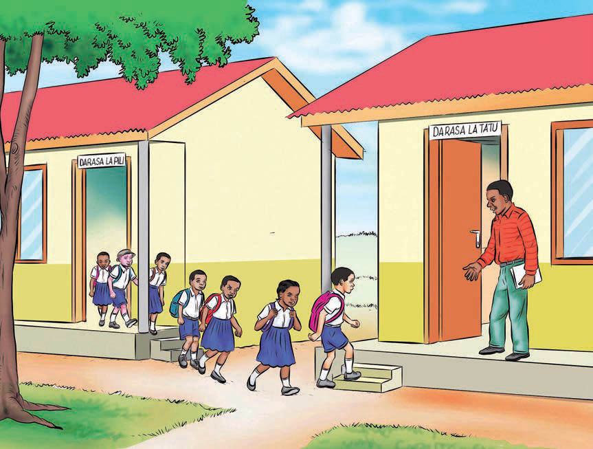

Zoezi la kwanza: Ufahamu
1. Ndwamila na Ndwalima wanasoma shule gani?
2. Shule ilifunguliwa lini?
3. Taja sababu ya baadhi ya wanafunzi wachache kutokufika shule.
4. Kwa nini wanafunzi wa Darasa la Tatu walikuwa na furaha?
5. Taja herufi mwambatano zilizotumika katika habari hii.
6. Bainisha maneno yenye sauti za herufi mwambatano ngw, ndw, njw, mbw na nzw katika habari hii.
7. Umejifunza nini kutokana na habari hii?